전기산업기사 (2008-05-11 기출문제)
1과목: 전기자기학
1. 그림과 같은 유한장 직선도체 AB에 전류 I가 흐를 때 임의의 점 P 의 자계의 세기는? (단, a는 P 와 AB사이의 거리, θ1, θ2 에서 도체 AB에 내린 수직선과 AP, BP가 이루는 각이다.)
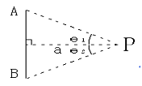
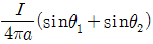
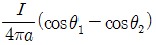
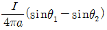
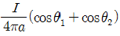
(정답률: 58%)
2. 전자파의 에너지 전달방향은?
- 전계 E 의 방향과 같다.
- 자계 H 의 방향과 같다.
- E×H 의 방향과 같다.
- ∇×E 의 방향과 같다.
(정답률: 71%)

3. 그림과 같은 비투자율 r 이 800, 원형단면적 S 가 10cm2 평균 자로의 길이 ℓ 이 30[cm]인 환상 철심에 코일을 600회 감아 1[A]의 전류를 흘릴 때 철심 내 자속은 몇 [Wb] 인가?
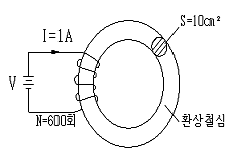
- 1.51 × 10-1[Wb]
- 2.01 × 10-1[Wb]
- 1.51 × 10-3[Wb]
- 2.01 × 10-3[Wb]
(정답률: 40%)
4. 다음 중 정전계에 대한 설명으로 가장 알맞은 것은?
- 전계에너지와 무관한 전하분포의 전계이다.
- 전계에너지가 최소로 되는 전하분포의 전계이다.
- 전계에너지가 최대로 되는 전하분포의 전계이다.
- 전계에너지를 일정하게 유지하는 전하분포의전계이다.
(정답률: 69%)
5. 반지름이 2[m], 권수가 100회인 원형코일의 중심에 30[AT/m]의 자계를 발생시키려면 몇 [A]의 전류를 흘려야 하는가?
- 1.2[A]
- 1.5[A]
- 150/π[A]
- 150[A]
(정답률: 53%)
6. 시간적으로 변화하지 않는 보존적인 전계가 비회전성(非回轉性)이라는 의미를 나타낸 식은?
- ∇⋅E = 0
- ∇⋅E = ∞
- ∇×E = 0
- ∇2 = 0
(정답률: 61%)
7. 다음 중 ( (ㄱ) ), ( (ㄴ) ) 안에 들어갈 내용으로 알맞은 것은?
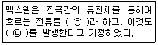
- (ㄱ) 와전류 (ㄴ) 자계
- (ㄱ) 변위전류 (ㄴ) 자계
- (ㄱ) 전자전류 (ㄴ) 전계
- (ㄱ) 파동전류 (ㄴ) 전계
(정답률: 70%)
8. 자성체의 스핀(Spin)배열상태를 표시한 것중 상자성체의 스핀의 배열상태를 표시한 것은?(단, 표시는 스핀 자기(磁氣)모멘트의 크기와 방향을 표시한 것임)
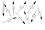
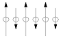
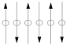
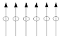
(정답률: 56%)
9. 반지름 a[m]인 접지 구도체의 중심으로부터 d[m](>a)인 곳에 점전하 Q[C] 가 있다면 구도체에 유기되는 전하량은 몇 [C] 인가?
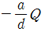
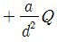
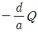
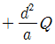
(정답률: 50%)
10. 반지름 2[m]인 구도체에 전하 10 × 10-4[C]이 주어질 때 구도체 표면에 작용하는 정전응력은 약 몇 [N/m2]인가?
- 22.4[N/m2]
- 26.6[N/m2]
- 30.8[N/m2]
- 32.2[N/m2]
(정답률: 53%)
11. 전기력선 밀도를 이용하여 주로 대칭 정전계의 세기를 구하기 위하여 이용되는 법칙은?
- 패러데이의 법칙
- 가우스의 법칙
- 쿨롱의 법칙
- 톰슨의 법칙
(정답률: 58%)
12. 다음 벡터장 중에서 정전계에 해당되는 것은 어느 것인가?
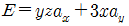
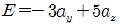
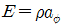
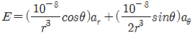
(정답률: 51%)
13. 다음 중 정전기와 자기의 유사점 비교로 옳지 않은 것은?
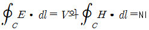
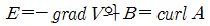
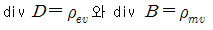
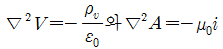
(정답률: 49%)
14. 전송회로에서 무손실인 경우 L = 360 [mH], C = 0.01 [㎌]일 때 특성 임피던스는 몇 [Ω]인가?
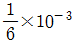
- 3.6 × 10-7
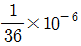
- 6 × 103
(정답률: 59%)
15. 100[mH]의 자기 인덕턴스를 가진 코일에 10[A]의 전류를 통할 때 축적되는 에너지는 몇 [] 인가?
- 1 [J]
- 5 [J]
- 50 [J]
- 1000 [J]
(정답률: 66%)
16. 히스테리시스 곡선이 횡축과 만나는 점은 무엇을 나타내는가?
- 투자율
- 잔류자속밀도
- 자력선
- 보자력
(정답률: 57%)
17. 정전용량이 C0 [㎌]인 평행판 공기 콘덴서의 판면적의 2/3 에 비유전율 εs인 에보나이트판을 그림과 같이 삽입하는 경우 콘덴서의 정전용량 [㎌]은?
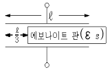
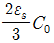
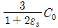
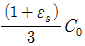
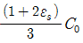
(정답률: 68%)
18. 공기 중에서 1 [V/m]의 전계를 1 [A/m2]의 변위전류로 흐르게 하려면 주파수는 몇 [MHz]가 되어야 하는가?
- 1500[MHz]
- 1800[MHz]
- 15000[MHz]
- 18000[MHz]
(정답률: 46%)
19. 두 종류의 유전체 경계면에서 전속과 전기력선이 경계면에 수직으로 도달할 때 다음 중 옳지 않은 것은?
- 전속과 전기력선은 굴절하지 않는다.
- 전속밀도는 변하지 않는다.
- 전계의 세기는 불연속적으로 변한다.
- 전속선은 유전률이 작은 유전체 쪽으로 모이려는 성질이 있다.
(정답률: 59%)
20. 두 자성체의 경계면에서 경계조건을 설명한 것 중 옳은 것은?
- 자계의 법선성분은 서로 같다.
- 자계와 자속밀도의 대수합은 항상 0 이다.
- 자속밀도의 법선성분은 서로 같다.
- 자계와 자속밀도의 대수합은 ∞ 이다.
(정답률: 57%)
2과목: 전력공학
21. 수차에서 캐비테이션에 의한 결과로 옳지 않은 것은?
- 유수에 접한 러너나 버킷 등에 침식이 발생한다.
- 수차에 진동을 일으켜서 소음이 발생한다.
- 흡출관 입구에서 수압의 변동이 현저해 진다.
- 토출측에서 물이 역류하는 현상이 발생한다.
(정답률: 44%)
22. 교류송전에서는 송전거리가 멀어질수록 동일 전압에서의 송전 가능전력이 적어진다. 다음 중 그 이유로 가장 알맞은 것은?
- 선로의 어드미턴스가 커지기 때문이다.
- 선로의 유도성 리액턴스가 커지기 때문이다.
- 코로나 손실이 증가하기 때문이다.
- 표피효과가 커지기 때문이다.
(정답률: 58%)
23. 다음 중 3상용 차단기의 정격차단용량으로 알맞은 것은?
- 정격전압× 정격차단전류
- √3 × 정격전압× 정격차단전류
- 3× 정격전압× 정격차단전류
- 3√3 × 정격전압× 정격차단전류
(정답률: 72%)
24. 역률 80[%], 10000[kVA]의 부하를 갖는 변전소에 2000[kVA]의 콘덴서를 설치하여 역률을 개선하면 변압기에 걸리는 부하는 몇 [kVA] 정도되는가?
- 8000[kVA]
- 8500[kVA]
- 9000[kVA]
- 9500[kVA]
(정답률: 43%)
25. 전선의 지지점 높이가 31[m]이고, 전선의 이도가 9[m]라면 전선의 평균 높이는 몇 [m]가 적당한가?
- 25.0[m]
- 26.5[m]
- 28.5[m]
- 30.0[m]
(정답률: 49%)
26. 직접 접지 방식이 초고압 송전선에 채용되는 이유 중 가장 타당한 것은?
- 지락 고장시 병행 통신선에 유기되는 유도 전압이 작기 때문에
- 지락시의 지락 전류가 적으므로
- 계통의 절연을 낮게 할수 있으므로
- 송전선의 안정도가 높으므로
(정답률: 39%)
27. 다음 그림은 카르노 사이클(carnot cycle)을 표현한 것이다. 단열팽창에 해당 되는 구간은? (단, P 는 압력이고 V 는 부피이다.)
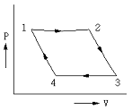
- 1 → 2
- 2 → 3
- 3 → 4
- 4 → 1
(정답률: 48%)
28. 정전된 값 이상의 전류가 흘렀을 때 동작전류의 크기와 관계없이 항시 정해진 시간이 경과 한 후에 동작하는 계전기는?
- 순한시 계전기
- 정한시 계전기
- 반한시 계전기
- 반한시성 정한시 계전기
(정답률: 65%)
29. 다음 중 피뢰기를 가장 적절하게 설명한 것은?
- 동요전압의 파두, 파미의 파형의 준도를 저감하는 것
- 이상전압이 내습하였을 때 방전에 의한 이상전압을 경감 시키는 것
- 뇌동요 전압의 파고를 저감하는 것
- 1선이 지락할 때 아크를 소멸시키는 것
(정답률: 63%)
30. 수전단 전압이 3300[V]이고, 전압 강하율이 4[%]인 송전선의 송전단 전압은 몇 [V]인가?
- 3395[V]
- 3432[V]
- 3495[V]
- 5678[V]
(정답률: 65%)
31. 어느 빌딩 부하의 총설비 전력이 400[kW], 수용률이 0.5라 하면 이 빌딩의 변전설비용량은 몇 [kVA] 이상이어야 하는가?(단, 부하역률은 80[%]라 한다.)
- 180[kVA]
- 250[kVA]
- 300[kVA]
- 360[kVA]
(정답률: 65%)
32. 복도체를 사용하면 송전용량이 증가하는 주된 이유로 알맞은 것은?
- 코로나가 발생하지 않는다.
- 선로의 작용인덕턴스가 감소한다.
- 전압강하가 적어진다.
- 무효전력이 적어진다.
(정답률: 51%)
33. 차단기의 개폐에 의한 이상전압은 대부분 송전선 대지전압의 몇 배 정도가 최고인가?
- 2배
- 4배
- 8배
- 10배
(정답률: 58%)
34. 다음 중 뇌해 방지와 관계가 없는 것은?
- 댐퍼
- 소호각
- 가공지선
- 매설지선
(정답률: 70%)
35. 원자력 발전에서 제어봉에 사용되는 제어재로 알맞은 것은?
- 하프늄
- 베릴륨
- 나트륨
- 경수
(정답률: 43%)
36. 터빈 입구의 엔탈피 815[kcal/kg], 복수의 엔탈피 270[kcal/kg], 유입증기량 300[t/h]일 때, 발전기 출력은 75000[kW]로 된다. 발전기 효율을 0.98로 한다면 터빈의 열효율은 약 몇 [%] 인가?
- 30.3[%]
- 40.3[%]
- 50.3[%]
- 60.3[%]
(정답률: 37%)
37. 장거리 송전선로의 특성을 정확하게 다루기 위한 회로로 알맞은 것은?
- 분포정수회로
- 분산부하회로
- 집중정수회로
- 특성임피던스회로
(정답률: 64%)
38. 가공 송전선에 사용되는 애자 1연 중 전압 부담이 최대인 애자는?
- 철탑에 제일 가까운 애자
- 전선에 제일 가까운 애자
- 중앙에 있는 애자
- 철탑과 애자련 중앙의 그 중간에 있는 애자
(정답률: 66%)
39. 배전선의 전압조정 방법이 아닌 것은?
- 승압기 사용
- 저전압계전기 사용
- 병렬콘덴서 사용
- 주상변압기 탭 전환
(정답률: 42%)
40. 동일한 2대의 단상변압기를 V결선하여 3상 전력을 100[kVA]까지 배전할 수 있다면 똑같은 단상변압기 1대를 추가하여 Δ결선하게 되면 3상 전력을 약 몇 [kVA] 까지 배전할 수 있겠는가?
- 57.7[kVA]
- 70.5[kVA]
- 141.4[kVA]
- 173.2[kVA]
(정답률: 55%)
3과목: 전기기기
41. 200[kW], 200[V]의 직류 분권 발전기가 있다. 전기자 권선의 저항 0.025[Ω]일 때 전압변동률은 몇 [%] 인가?
- 6.0
- 12.5
- 20.5
- 25.0
(정답률: 53%)
42. 3상 직권 정류자 전동기의 구조를 설명한 것 중 틀린 것은?
- 고정자에는 P극이 될 수 있는 3상 분포권선이 감겨 있다.
- 회전자는 직류기의 전기자와 거의 같다.
- 정류자 위에 브러시가 전기각 2π/3 의 간격으로 배치되어 있다.
- 중간변압기를 설치할 때에는 고정자 권선과 병렬로 설치한다.
(정답률: 44%)
43. 용량 10[kVA], 철손 120[W], 전부하 동손 200[W]인 단상 변압기 2대를 V결선하여 부하를 걸었을 때, 전부하 효율은 약 몇 [%] 인가? (단,부하의 역률은 √3/2이라 한다.)
- 99.2
- 98.3
- 97.9
- 95.9
(정답률: 23%)
44. 임피던스 강하가 5[%]인 변압기가 운전중 단락 되었을 때 단락 전류는 정격 전류의 몇 배인가?
- 10
- 15
- 20
- 25
(정답률: 58%)
45. 직류 분권 전동기가 있다. 여기에 전원 전압 120[V]를 가했을 때 전기자 전류 35[A]가 흐르고 회전수는 1300[rpm]이었다. 이 때 계자 전류 및 부하전류를 일정하게 유지하고 전원 전압을 150[V]로 올리면 회전수 [rpm]는 약 얼마인가? (단, 전기자 저항 0.4[Ω]이다.)
- 1543
- 1668
- 1625
- 2031
(정답률: 43%)
46. 동기발전기의 전기자 권선을 단절권으로 하는 가장 좋은 이유는?
- 기전력을 높이는데 있다.
- 절연이 잘 된다.
- 효율이 좋아진다.
- 고조파를 제거해서 기전력의 파형을 좋게 한다.
(정답률: 66%)
47. 25[kW], 125[V], 1200[rpm]의 직류 타여자 발전기의 전기자 저항(브러시 저항 포함)은 0.4[Ω] 이다. 이 발전기를 정격 상태에서 운전하고 있을 때 속도를 200[rpm]으로 저하시켰다면 발전기의 유기 기전력[V]은 어떻게 변화하겠는가? (단, 정상 상태에서의 유기 기전력은 E 라 한다.)
- 1/2 E
- 1/4 E
- 1/6 E
- 1/8 E
(정답률: 51%)
48. 전 부하에는 동손 100[W], 철손 50[W]인 변압기가 최대효율 [%]을 나타내는 부하는?
- 50
- 67
- 70
- 86
(정답률: 52%)
49. 변압기의 효율이 가장 좋을 때의 조건은?
- 철손 = 동손
- 철손= 1/2 동손
- 1/2 철손 = 동손
- 철손 = 2/3 동손
(정답률: 67%)
50. 직류기의 양호한 정류를 얻는 조건이 아닌 것은?
- 정류 주기를 크게 할 것
- 정류 코일의 인덕턴스를 작게 할 것
- 리액턴스 전압을 작게 할 것
- 브러시 접촉 저항을 작게 할 것
(정답률: 61%)
51. 중권으로 감긴 직류 전동기의 극수2, 매극의 자속수 0.09[Wb], 전도체수 80, 부하전류 12[A]일 때 발생하는 토크 [Kg⋅m]는 약 얼마인가?
- 1.4
- 2.8
- 3.8
- 4.5
(정답률: 38%)
52. 변압기의 내부 고장 보호에 쓰이는 계전기로서 가장 적당한 것은?
- 과전류 계전기
- 역상 계전기
- 접지 계전기
- 브후홀쯔 계전기
(정답률: 65%)
53. 유도 전동기에서 SCR을 사용하여 속도를 제어하는 경우 변화시키는 것은?
- 주파수
- 극수
- 위상각
- 전압의 최대치
(정답률: 58%)
54. 50[Hz], 12극의 3상 유도 전동기가 정격 전압으로 정격 출력 10[HP]를 발생하며 회전하고 있다. 이 때의 회전수는 약 몇 [rpm]인가? (단, 회전자 동손은 350[W], 회전자 입력은 출력과 회전자 동손과의 합이다.)
- 468
- 478
- 485
- 500
(정답률: 46%)
55. 3상 유도 전동기의 원선도를 그리는데 필요하지 않는 것은?
- 구속 시험
- 무부하 시험
- 슬립 측정
- 저항 측정
(정답률: 66%)
56. 동기기의 과도 안정도를 증가시키는 방법이 아닌 것은?
- 속응 여자 방식을 채용한다.
- 동기 탈조 계전기를 사용한다.
- 회전자의 플라이휠 효과를 작게 한다.
- 동기화 리액턴스를 작게 한다.
(정답률: 61%)
57. 유도전동기의 기동방식 중 권선형에만 사용할 수 있는 방식은?
- 리액터 기동
- Y-Δ 기동
- 2차 저항 기동
- 기동 보상기에 의한 기동
(정답률: 54%)
58. 철극형(凸극형) 발전기의 특징은?
- 형이 커진다.
- 회전이 빨라진다.
- 소음이 많다.
- 전기자 반작용 자속수가 역률의 영향을 받는다.
(정답률: 50%)
59. 다이오드를 사용한 단상전파정류회로에서 100[A]의 직류를 얻으려고 한다. 이 때 정류기의 교류측 전류는 약 몇 [A] 인가?
- 111
- 167
- 222
- 278
(정답률: 44%)
60. 4극, 60[Hz]의 3상 동기 발전기가 있다. 회전자의 주변 속도를 200[m/s] 이하로 하려면 회전자의 최대 직경을 약 몇 [m]로 하여야 하는가?
- 1.5
- 1.8
- 2.1
- 2.8
(정답률: 56%)
4과목: 회로이론
61. 다음 그림에서 V1 = 24[V] 일 때 V0[V]의 값은?
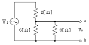
- 8
- 12
- 16
- 24
(정답률: 58%)
62. 그림과 같은 회로의 전달함수는?(단, 초기조건은 0이다.)
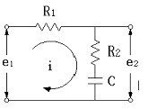
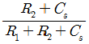
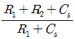
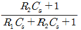
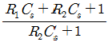
(정답률: 59%)
63. R = 15 [Ω], XL = 12 [Ω], Xc = 30 [Ω]이 병렬로 접속된 회로에 120[V]의 교류 전압을 가하면 전원에 흐르는 전류 [A]와 역률 [%]은 각각 얼마인가?
- 22, 85
- 22. 80
- 22, 60
- 10, 80
(정답률: 37%)
64. R = 10 [Ω], ωL = 5[Ω], 1 / ωC = 30 [Ω]이 직렬로 접속된 회로에서 기본파에 대한 합성임피던스 (Z1)와 제3고조파에 대한 합성임피던스 (Z3)는 각각 몇 [Ω] 인가?
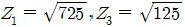
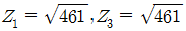
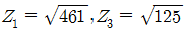
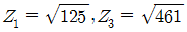
(정답률: 48%)
65. 전류 i = 30sinωt + 40sin(3ωt+45°)[A] 의 실효값은 몇 [A] 인가?
- 25
- 25√2
- 50
- 50√2
(정답률: 46%)
66. 그림의 회로에서 단자 a, b에 걸리는 전압 ab는 몇 [V] 인가?
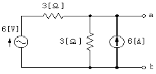
- 12
- 18
- 24
- 36
(정답률: 47%)
67. 비정현파의 일그러짐의 정도를 표시하는 양으로서 왜형률이란?
- 평균치 / 실효치
- 실효치 / 최대치
- 고조파만의 실효치 / 기본파의 실효치
- 기본파의 실효치 / 고조파만의 실효치
(정답률: 62%)
68. 3상 불평형 전압에서 역상전압이 10[V], 정상전압이 50[V], 영상전압이 200[V]라고 한다. 전압의 불평형률은 얼마인가?
- 0.1
- 0.⑤
- 0.2
- 0.5
(정답률: 59%)
69. R[Ω] 저항 3개를 Y로 접속하고 이것을 선간전압 200[V]의 평형 3상 교류 전원에 연결할 때 선전류가 20[A] 흘렀다. 이 3개의 저항을 Δ로 접속하고 동일 전원에 연결하였을 때의 선전류는 약 몇 [A] 인가?
- 30
- 40
- 50
- 60
(정답률: 51%)
70. 두 코일의 자기 인덕턴스가 L1[H], L2[H] 이고 상호인덕턴스가 M 일 때 결합계수 K 는?
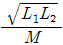
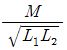
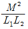
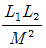
(정답률: 64%)
71. 저항과 콘덴서를 병렬로 접속한 회로에 직류 100[V]를 가하면 5[A]가 흐르고, 교류 300[V]를 가하면 25[A]가 흐른다. 이 때 콘덴서의 리액턴스는 몇 [Ω] 인가?
- 7
- 10
- 14
- 15
(정답률: 34%)
72. 그림과 같은 회로에서 정전용량 C[F]를 충전한 후 스위치 S를 닫아서 이것을 방전할 때 과도전류는? (단, 회로에는 저항이 없다.)
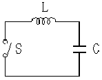
- 불변의 진동전류
- 감쇠하는 전류
- 감쇠하는 진동전류
- 일정값까지 증가하고 그 후 감쇠하는 전류
(정답률: 46%)
73. 그림과 같은 회로에서 t=0의 순간 S를 열었을 때 L의 양단에 발생하는 역기전력은 인가 전압의 몇 배가 발생하는가? (단, 스위치 S가 열기 전에 회로는 정상상태에 있었다.)
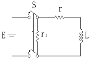
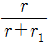
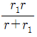
(정답률: 24%)
74. 구동점 임피던스에 있어서 영점(Zero)은?
- 전류가 흐르지 않는 경우이다.
- 회로를 개방한 것과 같다.
- 전압이 가장 큰 상태이다.
- 회로를 단락한 것과 같다.
(정답률: 42%)
75. 의 라플라스 변환은?(단, 는 임펌스 함수이다.)
(정답률: 29%)
76. 대칭 좌표법에 관한 설명 중 잘못된 것은?
- 불평형 3상 회로 비접지식 회로에서는 영상분이 존재한다.
- 대칭 3상 전압에서 영상분은 0이 된다.
- 대칭 3상 전압은 정상분만 존재한다.
- 불평형 3상 회로의 접지식 회로에서는 영상분이 존재한다.
(정답률: 36%)
77. 평형 3상 부하에 전력을 공급할 때 선전류 값이 20[A]이고 부하의 소비전력이 4[kW]이다. 이 부하의 등가 Y 회로에 대한 각 상의 저항값은 약 몇 [Ω] 인가?
- 3.3
- 5.7
- 7.2
- 10
(정답률: 39%)
78. 다음 파형의 라플라스 변환은?
(정답률: 46%)
79. 저항 40[Ω], 임피던스 50[Ω]의 직렬 유도 부하에서 소비되는 무효전력 [Var]은 얼마인가?(단, 인가전압은 100[V]이다. )
- 120
- 160
- 200
- 250
(정답률: 40%)
80. 그림과 같은 π 형 4단자 회로의 어드미턴스 파라미터 중 Y11은?
- Y1
- Y2
- Y1 + Y2
- Y2 + Y3
(정답률: 50%)
5과목: 전기설비기술기준 및 판단 기준
81. 터널 등에 시설하는 사용전압이 220[V]인 전구선의 단면적은 몇 [mm2] 이상이어야 하는가?
- 0.5 [mm2]
- 0.75 [mm2]
- 1.25 [mm2]
- 1.4 [mm2]
(정답률: 52%)
82. 저압 가공전선이 가공약전류 전선과 접근하여 시설될 때 가공전선과 가공약전류 전선 사이의 이격거리는 몇 [cm] 이상이어야 하는가?
- 30[cm]
- 40[cm]
- 60[cm]
- 80[cm]
(정답률: 45%)
83. 다음 중 지중전선로에 사용하는 지중함의 시설기준으로 적절하지 않은 것은?
- 견고하고 차량 기타 중량물의 압력에 견디는 구조일 것
- 안에 고인 물을 제거할 수 있는 구조로 되어 있을 것
- 뚜껑은 시설자 이외의 자가 쉽게 열수 없도록 시설할 것
- 조명 및 세척이 가능한 적당한 장치를 시설할 것
(정답률: 63%)
84. 타냉식의 특별고압용 변압기의 냉각장치에 고장이 생긴 경우 보호하는 장치로 가장 알맞은 것은?
- 경보장치
- 자동차단장치
- 압축공기장치
- 속도조정장치
(정답률: 64%)
85. 합성수지관 공사시 관 상호간 및 박스와의 접속은 관에 삽입하는 깊이를 관 바깥 지름의 몇 배 이상으로 하여야 하는가? (단, 접착제를 사용하지 않는 경우이다.)
- 0.5배
- 0.8배
- 1.2배
- 1.5배
(정답률: 57%)
86. 네온 방전관을 사용한 사용전압 12000[V] 인 방전등에 사용되는 네온 변압기 외함의 접지공사로서 알맞은 것은?(관련 규정 개정전 문제로 여기서는 기존 정답인 3번을 누르면 정답 처리됩니다. 자세한 내용은 해설을 참고하세요.)
- 제1종 접지공사
- 제2종 접지공사
- 제3종 접지공사
- 특별 제3종 접지공사
(정답률: 52%)
87. 다음 중 가공전선로의 지지물로 사용하는 지선에 대한 설명으로 옳지 않은 것은?
- 지선의 안전율은 2.5 이상이며, 허용 인장하중의 최저는 4.31[kN]으로 한다.
- 지선에 연선을 사용할 경우 소선(素線) 4가닥 이상의 연선이어야 한다.
- 도로를 횡단하는 경우 지선의 높이는 기술상 부득이한 경우 등을 제외하고 지표상 5[m] 이상으로 하여야 한다.
- 지중부분 및 지표상 30[cm] 까지의 부분에는 내식성이 있는 것을 사용한다.
(정답률: 62%)
88. 사용전압이 154[kV]인 가공전선로를 제1종 특별고압 보안공사로 시설할 때 사용되는 경동연선의 단면적은 몇 [mm2] 이상이어야 하는가?
- 55 [mm2]
- 100 [mm2]
- 150 [mm2]
- 200 [mm2]
(정답률: 56%)
89. 고압 가공전선로의 가공지선으로 나경동선을 사용하는 경우의 지름은 몇 [mm] 이상이어야 하는가?
- 3.2[mm]
- 4.0[mm]
- 5.5[mm]
- 6.0[mm]
(정답률: 54%)
90. 목장에서 가축의 탈출을 방지하기 위하여 전기 울타리를 시설하는 경우의 전선은 인장강도가 몇 [kN] 이상의 것이어야 하는가?
- 0.39[kN]
- 1.38[kN]
- 2.78[kN]
- 5.93[kN]
(정답률: 49%)
91. 가반형의 용접 전극을 사용하는 아크 용접장치의 용접 변압기의 1차측 전로의 대지전압은 몇 [V] 인가?
- 150[V]
- 220[V]
- 300[V]
- 380[V]
(정답률: 58%)
92. 최대사용전압이 22900[V]인 3상 4선식 중성선 다중 접지식 전로와 대지 사사이의 절연 내력시험전압은 몇 [V] 인가?
- 21068[V]
- 25229[V]
- 28752[V]
- 32510[V]
(정답률: 55%)
93. 다음 중 옥내전로의 시설 기준으로 적절하지 않은 것은?
- 주택의 옥내전로의 대지전압은 250[V] 이하이어야 한다.
- 주택의 옥내전로의 사용전압은 400[V] 미만이어야 한다.
- 주택의 전로 인입구에는 인체보호용 누전차단기를 시설하여야 한다.
- 정격 소비 전력 2[kW] 이상의 전기기계기구는 옥내 배선과 직접 접속한다.
(정답률: 47%)
94. 다음 중 농사용 저압 가공전선로의 시설 기준으로 옳지 않은 것은?
- 사용전압이 저압일 것
- 저압 가공 전선의 인장강도는 1.38[kN] 이상일 것
- 저압 가공전선의 지표상 높이는 3.5[m] 이상일 것
- 전선로의 경간은 40[m] 이하일 것
(정답률: 61%)
95. 다음 중 전기부식방지를 위한 귀선의 시설방법에 대한 설명으로 옳지 않은 것은?
- 귀선은 부극성(負極性)으로 할 것
- 이음매 하나의 저항은 그 레일의 길이 5[m]의 저항에 상당한 값 이하일 것
- 귀선용 레일은 특수한 곳 이외에는 길이30[m] 이상이되도록 연속하여 용접할 것
- 단면적 38[mm2] 이상, 길이를 60[cm] 이상의 연동 연선을 사용한 본드 2개 이상을 용접함으로써 레일 용접에 갈음할 수 있다.
(정답률: 47%)
96. 다음 ( )안에 들어갈 내용으로 알맞은 것은?
- 300[m]
- 1[km]
- 5[km]
- 10[km]
(정답률: 38%)
97. 특별고압 가공전선로의 시설에 있어서 중성선을 다중 접지하는 경우에 각각 접지한 곳 상호 간의 거리는 전선로에 따라 몇 [m] 이하이어야 하는가?
- 150[m]
- 300[m]
- 400[m]
- 500[m]
(정답률: 33%)
98. “조상설비”에 대한 용어의 정의로 알맞은 것은?
- 전압을 조정하는 설비를 말한다.
- 전류를 조정하는 설비를 말한다.
- 유효전력을 조정하는 전기기계기구를 말한다.
- 무효전력을 조정하는 전기기계기구를 말한다.
(정답률: 58%)
99. 전로의 중성점을 접지하는 목적에 해당되지 않는 것은?
- 보호 장치의 확실한 동작을 확보
- 이상전압의 억제
- 상시 부하전류의 일부를 대지로 흐르게 함으로써 위험에 대처
- 대지전압의 저하
(정답률: 40%)
100. 사용전압이 35000[V] 이하의 특별고압가공전선이 상부 조영재의 위쪽에서 제1차 접근상태로 시설되는 경우, 특별고압 가공전선과 건조물의 조영재 이격거리는 몇 [m] 이상이어야 하는가? (단, 전선의 종류는 케이블이라고 한다.)
- 0.5[m]
- 1.2[m]
- 2.5[m]
- 3.0[m]
(정답률: 35%)